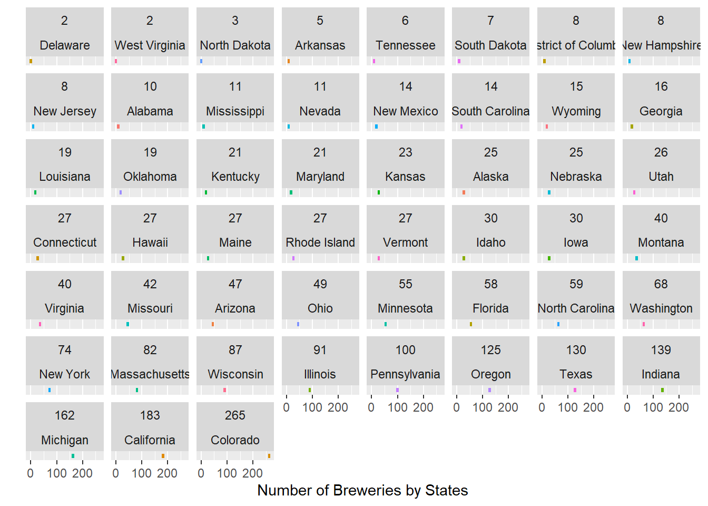
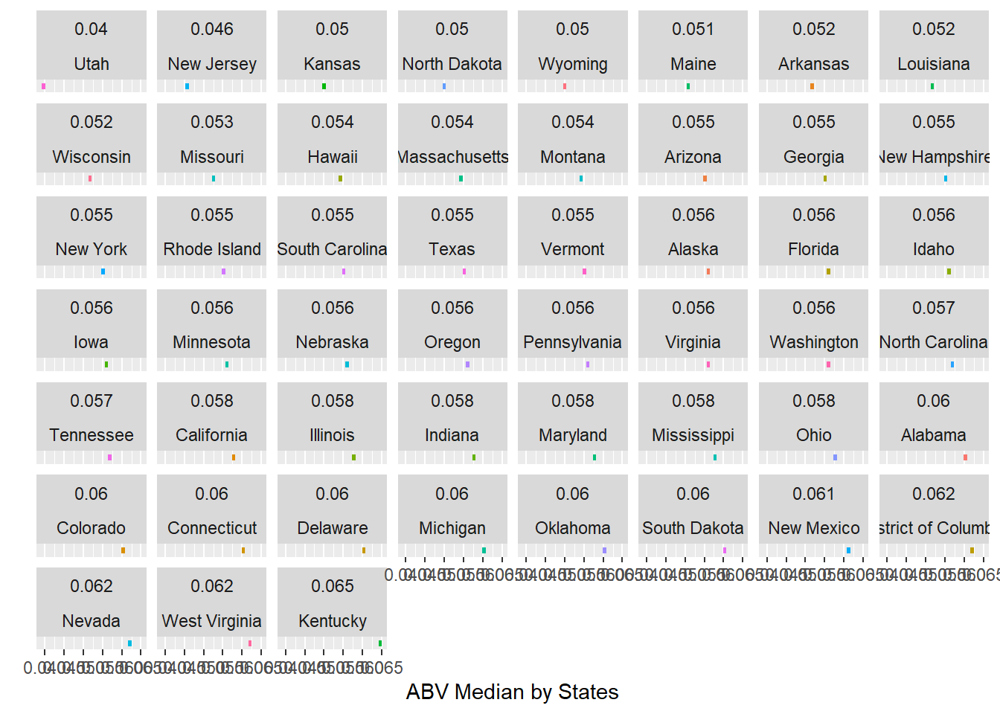

Case Study 1
Lani Lewis
2023-03-21
This area is used to setup R studio for this project
Import in all datasets
# IMPORT DATASETS ####
# Import Beers data set
beers <- read.csv(file = "Beers.csv",header = T)# Import Breweries data set
breweries <- read.csv("Breweries.csv",header = T)# Import Breweries data set
state_abb_list <- read.csv("State_Abbrv_List.csv",header = T)
# Change column names
colnames(state_abb_list)[1] <- c("Full_State")
colnames(state_abb_list)[3] <- c("State")# UNDERSTAND DATASETS ####
# What kind of data am I looking at
str(beers)## 'data.frame': 2410 obs. of 7 variables:
## $ Name : chr "Pub Beer" "Devil's Cup" "Rise of the Phoenix" "Sinister" ...
## $ Beer_ID : int 1436 2265 2264 2263 2262 2261 2260 2259 2258 2131 ...
## $ ABV : num 0.05 0.066 0.071 0.09 0.075 0.077 0.045 0.065 0.055 0.086 ...
## $ IBU : int NA NA NA NA NA NA NA NA NA NA ...
## $ Brewery_id: int 409 178 178 178 178 178 178 178 178 178 ...
## $ Style : chr "American Pale Lager" "American Pale Ale (APA)" "American IPA" "American Double / Imperial IPA" ...
## $ Ounces : num 12 12 12 12 12 12 12 12 12 12 ...str(breweries)## 'data.frame': 558 obs. of 4 variables:
## $ Brew_ID: int 1 2 3 4 5 6 7 8 9 10 ...
## $ Name : chr "NorthGate Brewing " "Against the Grain Brewery" "Jack's Abby Craft Lagers" "Mike Hess Brewing Company" ...
## $ City : chr "Minneapolis" "Louisville" "Framingham" "San Diego" ...
## $ State : chr " MN" " KY" " MA" " CA" ...str(state_abb_list)## 'data.frame': 51 obs. of 3 variables:
## $ Full_State: chr "Alabama" "Alaska" "Arizona" "Arkansas" ...
## $ abbrev : chr "Ala." "Alaska" "Ariz." "Ark." ...
## $ State : chr "AL" "AK" "AZ" "AR" ...# REVIEW MISSING VALUES ####
# beers dataset has missing values in IBU & ABV column
view(beers)
## SFAE BEER DATASET CHECKPOINT ####
safe_beers = beers
# There is missing values in some of the rows not all. Handling Missing Data Files for Question #3
## Look at only NA Values in beers data set ####
beers_na = beers
# create a logical vector indicating which rows have missing values
na_rows <- apply(is.na(beers_na), 1, any)
beers_na <- beers_na[na_rows, ]
str(beers_na)## 'data.frame': 1005 obs. of 7 variables:
## $ Name : chr "Pub Beer" "Devil's Cup" "Rise of the Phoenix" "Sinister" ...
## $ Beer_ID : int 1436 2265 2264 2263 2262 2261 2260 2259 2258 2131 ...
## $ ABV : num 0.05 0.066 0.071 0.09 0.075 0.077 0.045 0.065 0.055 0.086 ...
## $ IBU : int NA NA NA NA NA NA NA NA NA NA ...
## $ Brewery_id: int 409 178 178 178 178 178 178 178 178 178 ...
## $ Style : chr "American Pale Lager" "American Pale Ale (APA)" "American IPA" "American Double / Imperial IPA" ...
## $ Ounces : num 12 12 12 12 12 12 12 12 12 12 ...#### Check and make sure I only see na in ABV(3) and IBU(4) columns ####
#which(is.na(beers_na), arr.ind = TRUE)#### Count how many objects are NA in the ABV column ####
ABV_na_Index <- which(is.na(beers_na$ABV), arr.ind = TRUE)
# 62 rows
ABV_CNT <- length(ABV_na_Index)
ABV_CNT## [1] 62#### Count how many objects are NA in the IBU column ####
IBU_na_Index <- which(is.na(beers_na$IBU), arr.ind = TRUE)
# 1005 rows
IBU_Cnt <- length(IBU_na_Index)
IBU_Cnt## [1] 1005Investigation Code Chunk
#### Understand which rows are missing both ABV and IBU ####
#str(which(is.na(beers_na$IBU) & is.na(beers_na$ABV), arr.ind = TRUE))
#which(is.na(beers_na$IBU) & is.na(beers_na$ABV), arr.ind = TRUE)
# 62 matches so for every ABV NA there will also be an NA IBU
# Check this theory
#beers_na[112, ] # Double Play Pilsner | 1541
#beers_na[117, ] # N Street Drive-In 50th Anniversary IPA | 1025
#beers_na[123, ] # Professor Black | 2490
#beers_na[124, ] # Little Boss | 2489
#beers_na[125, ] # Van Dayum! | 2488Plot to show the missing values in correlation to the size of beer, and we see that the smaller beers have more missing values
# MIssing Data PLot 2 ####
beers_na %>%
ggplot() +
geom_point(aes(y = as.factor(Style), x = as.factor(Ounces), color = as.factor(Ounces)), position = "jitter") +
xlab("Ounces of Beer") +
ylab("Style of Beer") +
labs(color = "Ounces") # EXPORT NA FIELDS TO CSV ####
write.csv(beers_na, "Missing_Data.csv", row.names = T)Merge Datasets together for Question #2
# MERGE SAFE_BEERS AND ALL BEER DATA ####
# Rename Column Names for Consistency and Merge Process
colnames(beers)[5] <- c("Brew_ID")
colnames(beers)[1] <- c("Beer_Name")
colnames(breweries)[2] <- c("Brewery")
colnames(safe_beers)[5] <- c("Brew_ID")
colnames(safe_beers)[1] <- c("Beer_Name")
# Merge Data
#beer_ds <- merge(beers,breweries, by = "Brew_ID")
## CREATE ALL_BEER_DS ####
all_beer_ds <- merge(safe_beers,breweries, by = "Brew_ID")
# Check Data
#str(beer_ds)
str(all_beer_ds)## 'data.frame': 2410 obs. of 10 variables:
## $ Brew_ID : int 1 1 1 1 1 1 2 2 2 2 ...
## $ Beer_Name: chr "Get Together" "Maggie's Leap" "Wall's End" "Pumpion" ...
## $ Beer_ID : int 2692 2691 2690 2689 2688 2687 2686 2685 2684 2683 ...
## $ ABV : num 0.045 0.049 0.048 0.06 0.06 0.056 0.08 0.125 0.077 0.042 ...
## $ IBU : int 50 26 19 38 25 47 68 80 25 42 ...
## $ Style : chr "American IPA" "Milk / Sweet Stout" "English Brown Ale" "Pumpkin Ale" ...
## $ Ounces : num 16 16 16 16 16 16 16 16 16 16 ...
## $ Brewery : chr "NorthGate Brewing " "NorthGate Brewing " "NorthGate Brewing " "NorthGate Brewing " ...
## $ City : chr "Minneapolis" "Minneapolis" "Minneapolis" "Minneapolis" ...
## $ State : chr " MN" " MN" " MN" " MN" ...Handle Missing Values for Question #3
Replace ABV and IBU missing values with Styled median values. This way when we go to grab the median or results wont be so skewed. Especially since we have close to half of the data set missing values.
# HANDLING MISSING VALUES WITH CUMPUTED VALUES ####
all_beer_ds$Style = as.factor(all_beer_ds$Style)
# Grab the index of each NA row by ABV and IBU ####
index_safe_beers_ABV = which(is.na(all_beer_ds$ABV))
#index_safe_beers_IBU = which(is.na(all_beer_ds$IBU))
## FInd Median based on Styel ####
style_ABV_cnt <- aggregate(ABV ~ Style, all_beer_ds, median)
style_IBU_cnt <- aggregate(IBU ~ Style, all_beer_ds, median)# Style with no IBU at all like Rauchier and replace with median first then run the loop
missing_IBU <- setdiff(levels(all_beer_ds$Style), levels(as.factor(as.character(style_IBU_cnt$Style))))
## Median IBU for all beers ####
no_style_IBU_cnt <- median(style_IBU_cnt$IBU)
# Capture beer index for Loop
Ale_index <- which(grepl("Blonde Ale", all_beer_ds$Style))
Red_index <- which(grepl("Red Ale", all_beer_ds$Style))
APA_index <- which(grepl("American Pale Ale", all_beer_ds$Style))
Wheat_index <- which(grepl("Wheat Ale", all_beer_ds$Style))
lager_index <- which(grepl("Lager", all_beer_ds$Style))
Stout_index <- which(grepl("Stout", all_beer_ds$Style))
Mead_index <- which(grepl("Mead", all_beer_ds$Style))
Cider_index <- which(grepl("Cider", all_beer_ds$Style))
IPA_index <- which(grepl("American IPA", all_beer_ds$Style))
Double_index <- which(grepl("American Double", all_beer_ds$Style))
missing_index_IBU <- which(is.na(all_beer_ds$IBU))
# American Blonde Ale
for (a in 1:length(Ale_index)) {
all_beer_ds[Ale_index[a], "IBU"] = 15
}
# American Amber / Red Ale
for (r in 1:length(Red_index)) {
all_beer_ds[Red_index[r], "IBU"] = 17
}
# American Pale Ale (APA)
for (p in 1:length(APA_index)) {
all_beer_ds[APA_index[p], "IBU"] = 35
}
# American Pale Wheat Ale
for (w in 1:length(Wheat_index)) {
all_beer_ds[Wheat_index[w], "IBU"] = 10
}
# lager Replacement
for (l in 1:length(lager_index)) {
all_beer_ds[lager_index[l], "IBU"] = 8
}
# Stout Replacement
for (s in 1:length(Stout_index)) {
all_beer_ds[Stout_index[s], "IBU"] = 25
}
# Mead Replacement
for (m in 1:length(Mead_index)) {
all_beer_ds[Mead_index[m], "IBU"] = 0
}
# Cider Replacement
for (c in 1:length(Cider_index)) {
all_beer_ds[Cider_index[c], "IBU"] = 5
}
# IPA Replacement
for (p in 1:length(IPA_index)) {
all_beer_ds[IPA_index[p], "IBU"] = 55
}
# Double Replacement
for (d in 1:length(Double_index)) {
all_beer_ds[Double_index[d], "IBU"] = 65
} # Catch the leftovers IBU Values
for (g in 1:length(missing_index_IBU)) {
# General Replacement
all_beer_ds[missing_index_IBU[g], "IBU"] = no_style_IBU_cnt
}## ABV LOOP MEDIAN ####
for (i in 1:length(index_safe_beers_ABV)) {
all_beer_ds[index_safe_beers_ABV[i], "ABV"] = style_ABV_cnt[style_ABV_cnt$Style == all_beer_ds[index_safe_beers_ABV[i], "Style"], "ABV"]
}## Beers_ds CHECKPOINT ####
beers_ds <- all_beer_ds
str(beers_ds)## 'data.frame': 2410 obs. of 10 variables:
## $ Brew_ID : int 1 1 1 1 1 1 2 2 2 2 ...
## $ Beer_Name: chr "Get Together" "Maggie's Leap" "Wall's End" "Pumpion" ...
## $ Beer_ID : int 2692 2691 2690 2689 2688 2687 2686 2685 2684 2683 ...
## $ ABV : num 0.045 0.049 0.048 0.06 0.06 0.056 0.08 0.125 0.077 0.042 ...
## $ IBU : num 55 25 19 38 25 47 65 80 25 35 ...
## $ Style : Factor w/ 100 levels "","Abbey Single Ale",..: 16 77 48 83 22 57 12 46 77 18 ...
## $ Ounces : num 16 16 16 16 16 16 16 16 16 16 ...
## $ Brewery : chr "NorthGate Brewing " "NorthGate Brewing " "NorthGate Brewing " "NorthGate Brewing " ...
## $ City : chr "Minneapolis" "Minneapolis" "Minneapolis" "Minneapolis" ...
## $ State : chr " MN" " MN" " MN" " MN" ...Compute the median alcohol content and international bitterness unit for each state. Question #4
# DATAFRAME FOR MEDIAN AND MEAN VALUES ####
# WILL BE USED FOR PLOTTING
plot_ds <- as.data.frame(matrix(nrow = 50, ncol = 0))
plot_ds## data frame with 0 columns and 50 rows# Compute the median alcohol content and international bitterness unit for each state. ####
## IBU Median by State ####
plot_ds <- beers_ds %>% group_by(State) %>%
summarise(median = median(IBU))
plot_ds <- arrange(plot_ds, desc(median))
colnames(plot_ds)[2] <- c("IBU_Median")
plot_ds## # A tibble: 51 × 2
## State IBU_Median
## <chr> <dbl>
## 1 " NJ" 55
## 2 " WV" 53
## 3 " AL" 35
## 4 " MN" 35
## 5 " ND" 35
## 6 " VA" 34
## 7 " TN" 33.5
## 8 " MS" 31
## 9 " DE" 30
## 10 " AK" 25
## # … with 41 more rows## ABV median by State ####
ABV_Median <- beers_ds %>% group_by(State) %>%
summarise(median = median(ABV))
ABV_Median <- arrange(ABV_Median, desc(median))
ABV_Median## # A tibble: 51 × 2
## State median
## <chr> <dbl>
## 1 " KY" 0.065
## 2 " DC" 0.0625
## 3 " NV" 0.062
## 4 " WV" 0.062
## 5 " NM" 0.061
## 6 " AL" 0.06
## 7 " CO" 0.06
## 8 " CT" 0.06
## 9 " DE" 0.06
## 10 " MI" 0.06
## # … with 41 more rows# Merge data with Plot data
plot_ds <- merge(plot_ds, ABV_Median, by = "State")
colnames(plot_ds)[3] <- c("ABV_Median")
plot_ds## State IBU_Median ABV_Median
## 1 AK 25.0 0.05600
## 2 AL 35.0 0.06000
## 3 AR 25.0 0.05200
## 4 AZ 25.0 0.05500
## 5 CA 25.0 0.05800
## 6 CO 25.0 0.06000
## 7 CT 25.0 0.06000
## 8 DC 25.0 0.06250
## 9 DE 30.0 0.06000
## 10 FL 25.0 0.05550
## 11 GA 25.0 0.05500
## 12 HI 25.0 0.05400
## 13 IA 25.0 0.05550
## 14 ID 25.0 0.05650
## 15 IL 25.0 0.05800
## 16 IN 25.0 0.05800
## 17 KS 25.0 0.05000
## 18 KY 25.0 0.06500
## 19 LA 25.0 0.05200
## 20 MA 25.0 0.05400
## 21 MD 25.0 0.05800
## 22 ME 25.0 0.05100
## 23 MI 25.0 0.06000
## 24 MN 35.0 0.05600
## 25 MO 25.0 0.05325
## 26 MS 31.0 0.05800
## 27 MT 25.0 0.05450
## 28 NC 25.0 0.05700
## 29 ND 35.0 0.05000
## 30 NE 25.0 0.05600
## 31 NH 25.0 0.05500
## 32 NJ 55.0 0.04600
## 33 NM 25.0 0.06100
## 34 NV 25.0 0.06200
## 35 NY 25.0 0.05500
## 36 OH 25.0 0.05800
## 37 OK 25.0 0.06000
## 38 OR 25.0 0.05600
## 39 PA 25.0 0.05650
## 40 RI 25.0 0.05500
## 41 SC 25.0 0.05500
## 42 SD 25.0 0.06000
## 43 TN 33.5 0.05700
## 44 TX 25.0 0.05500
## 45 UT 25.0 0.04000
## 46 VA 34.0 0.05650
## 47 VT 25.0 0.05500
## 48 WA 25.0 0.05550
## 49 WI 25.0 0.05200
## 50 WV 53.0 0.06200
## 51 WY 25.0 0.05000# MERGE MEDIAN DATASET WITH STATE ABBREVIATIONS ####
plt_ds = plot_ds
# Change from factor to character
plt_ds$State <- as.character(plt_ds$State)
# Remove spaces in state field
plt_ds$State <- gsub("\\s", "", plt_ds$State)
# MERGE median values
#all_beer_ds <- merge(all_beer_ds, plt_ds, by = "State")
# Left Merge the data
plt_ds <- merge(plt_ds, state_abb_list, by = "State", all.x = T )
str(plt_ds)## 'data.frame': 51 obs. of 5 variables:
## $ State : chr "AK" "AL" "AR" "AZ" ...
## $ IBU_Median: num 25 35 25 25 25 25 25 25 30 25 ...
## $ ABV_Median: num 0.056 0.06 0.052 0.055 0.058 0.06 0.06 0.0625 0.06 0.0555 ...
## $ Full_State: chr "Alaska" "Alabama" "Arkansas" "Arizona" ...
## $ abbrev : chr "Alaska" "Ala." "Ark." "Ariz." ...# MERGE AND CREATE FULL DATASET FOR CHARTS ####
## ALL BEERS DS BACKUP CHECK POINT ####
backup_ds = all_beer_ds
# RECOVER DATA
#all_beer_ds = backup_ds
# Remove spaces in state field
#all_beer_ds$State <- gsub("\\s", "", all_beer_ds$State)
#all_beer_ds <- merge(all_beer_ds, state_abb_list, by = "State", all.x = T )
#str(beer_ds)
str(all_beer_ds)## 'data.frame': 2410 obs. of 10 variables:
## $ Brew_ID : int 1 1 1 1 1 1 2 2 2 2 ...
## $ Beer_Name: chr "Get Together" "Maggie's Leap" "Wall's End" "Pumpion" ...
## $ Beer_ID : int 2692 2691 2690 2689 2688 2687 2686 2685 2684 2683 ...
## $ ABV : num 0.045 0.049 0.048 0.06 0.06 0.056 0.08 0.125 0.077 0.042 ...
## $ IBU : num 55 25 19 38 25 47 65 80 25 35 ...
## $ Style : Factor w/ 100 levels "","Abbey Single Ale",..: 16 77 48 83 22 57 12 46 77 18 ...
## $ Ounces : num 16 16 16 16 16 16 16 16 16 16 ...
## $ Brewery : chr "NorthGate Brewing " "NorthGate Brewing " "NorthGate Brewing " "NorthGate Brewing " ...
## $ City : chr "Minneapolis" "Minneapolis" "Minneapolis" "Minneapolis" ...
## $ State : chr " MN" " MN" " MN" " MN" ...str(backup_ds)## 'data.frame': 2410 obs. of 10 variables:
## $ Brew_ID : int 1 1 1 1 1 1 2 2 2 2 ...
## $ Beer_Name: chr "Get Together" "Maggie's Leap" "Wall's End" "Pumpion" ...
## $ Beer_ID : int 2692 2691 2690 2689 2688 2687 2686 2685 2684 2683 ...
## $ ABV : num 0.045 0.049 0.048 0.06 0.06 0.056 0.08 0.125 0.077 0.042 ...
## $ IBU : num 55 25 19 38 25 47 65 80 25 35 ...
## $ Style : Factor w/ 100 levels "","Abbey Single Ale",..: 16 77 48 83 22 57 12 46 77 18 ...
## $ Ounces : num 16 16 16 16 16 16 16 16 16 16 ...
## $ Brewery : chr "NorthGate Brewing " "NorthGate Brewing " "NorthGate Brewing " "NorthGate Brewing " ...
## $ City : chr "Minneapolis" "Minneapolis" "Minneapolis" "Minneapolis" ...
## $ State : chr " MN" " MN" " MN" " MN" ...Compute the Number of Breweries by State Question #1
# How many breweries are present in each state? | State_cnt ####
state_cnt <- all_beer_ds %>% count(State, sort = T)
colnames(state_cnt)[2] <- "Number_of_States"
state_cnt <- arrange(state_cnt, desc(Number_of_States))
# Remove spaces in state field
state_cnt$State <- gsub("\\s", "", state_cnt$State)
# Left Merge
state_cnt = merge(state_cnt, state_abb_list, by = "State", all.y = T)
str(state_cnt)## 'data.frame': 51 obs. of 4 variables:
## $ State : chr "AK" "AL" "AR" "AZ" ...
## $ Number_of_States: int 25 10 5 47 183 265 27 8 2 58 ...
## $ Full_State : chr "Alaska" "Alabama" "Arkansas" "Arizona" ...
## $ abbrev : chr "Alaska" "Ala." "Ark." "Ariz." ...# PLOT1 Facet Wrap| How many breweries are present in each state? ####
state_cnt %>% arrange(state_cnt, desc(Number_of_States)) %>%
ggplot(aes(x = Number_of_States, fill = Full_State)) +
geom_histogram() +
xlab("Number of Breweries by States") +
ylab("") +
facet_wrap(Number_of_States ~ Full_State) +
scale_y_discrete() +
theme(legend.position = "none")## `stat_bin()` using `bins = 30`. Pick better value with
## `binwidth`.
# PLOT2 Bar Chart| How many breweries are present in each state? ####
Top_Ten <- state_cnt[order(-state_cnt$Number_of_States), ]
head(Top_Ten, 10) %>%
ggplot(aes(reorder(Number_of_States, x = Full_State), x = Number_of_States, fill = Full_State, color = "red")) +
geom_bar(stat = "identity") +
geom_text(aes(label = Number_of_States), size = 4, hjust = 1, color = "black") +
xlab("Number of Breweries") +
ylab("State") +
theme(legend.position = "none") +
scale_fill_brewer(palette = "YlOrRd")## Warning in RColorBrewer::brewer.pal(n, pal): n too large, allowed maximum for palette YlOrRd is 9
## Returning the palette you asked for with that many colors# ?colorMedian Charts for Question #4
Bar Charts to compare the Median value of ABV vs IBU by state
Top_5_IBU <- plt_ds[order(-plt_ds$IBU_Median), ]
Top_5_ABV <- plt_ds[order(-plt_ds$ABV_Median), ]
# IBU CHART
p3 <- head(Top_5_IBU, 5) %>%
ggplot(aes(reorder(IBU_Median, x = Full_State), x = IBU_Median, fill = IBU_Median)) +
geom_bar(stat = "identity") +
xlab("IBU Median") +
ylab("State") +
scale_fill_gradient(low = "black", high = "red")
# ABV CHART
p4 <- head(Top_5_ABV, 5) %>%
ggplot(aes(reorder(ABV_Median, x = Full_State), x = ABV_Median, fill = ABV_Median)) +
geom_bar(stat = "identity") +
xlab("ABV Median") +
ylab("State") +
scale_fill_gradient(low = "black", high = "red")
cowplot::plot_grid(p3, p4, ncol = 2)Bar Charts to compare the TOP 5 State and their Median value of ABV vs IBU
# IBU CHART
p1 <- plt_ds %>% ggplot(aes(reorder(IBU_Median, x = State), x = IBU_Median, fill = IBU_Median)) +
geom_bar(stat = "identity") +
xlab("IBU Median") +
ylab("State") +
scale_fill_gradient(low = "black", high = "red") +
theme(axis.text.y = element_blank())
# ABV CHART
p2 <- plt_ds %>% ggplot(aes(reorder(ABV_Median, x = State), x = ABV_Median, fill = ABV_Median)) +
geom_bar(stat = "identity") +
xlab("ABV Median") +
ylab("State") +
scale_fill_gradient(low = "black", high = "red") +
theme(axis.text.y = element_blank())
cowplot::plot_grid(p1, p2, ncol = 2)Breakdown of of Median values by State
# PLOT IBU Median by States ####
plt_ds %>% arrange(IBU_Median, desc(Full_State)) %>%
ggplot(aes(x = IBU_Median, fill = Full_State)) +
geom_histogram() +
xlab("IBU Median by States") +
ylab("") +
facet_wrap(IBU_Median ~ Full_State) +
scale_y_discrete() +
theme(legend.position = "none")## `stat_bin()` using `bins = 30`. Pick better value with
## `binwidth`.# FIX ROUNDING ####
plt_ds$ABV_Median <- round(plt_ds$ABV_Median, digits = 3)
# PLOT ABV Median by States ####
plt_ds %>% arrange(ABV_Median, desc(Full_State)) %>%
ggplot(aes(x = ABV_Median, fill = Full_State)) +
geom_histogram() +
xlab("ABV Median by States") +
ylab("") +
facet_wrap(ABV_Median ~ Full_State) +
scale_y_discrete() +
theme(legend.position = "none")## `stat_bin()` using `bins = 30`. Pick better value with
## `binwidth`. Review the Summary Data of the data sets for Question #6
# Reviewing all beers ds | The entire data set
summary(all_beer_ds)## Brew_ID Beer_Name Beer_ID
## Min. : 1.0 Length:2410 Min. : 1.0
## 1st Qu.: 94.0 Class :character 1st Qu.: 808.2
## Median :206.0 Mode :character Median :1453.5
## Mean :232.7 Mean :1431.1
## 3rd Qu.:367.0 3rd Qu.:2075.8
## Max. :558.0 Max. :2692.0
##
## ABV IBU
## Min. :0.00100 Min. : 4.00
## 1st Qu.:0.05000 1st Qu.: 25.00
## Median :0.05600 Median : 25.00
## Mean :0.05972 Mean : 30.19
## 3rd Qu.:0.06700 3rd Qu.: 35.00
## Max. :0.12800 Max. :100.00
##
## Style Ounces
## American IPA : 424 Min. : 8.40
## American Pale Ale (APA) : 245 1st Qu.:12.00
## American Amber / Red Ale : 133 Median :12.00
## American Blonde Ale : 108 Mean :13.59
## American Double / Imperial IPA: 105 3rd Qu.:16.00
## American Pale Wheat Ale : 97 Max. :32.00
## (Other) :1298
## Brewery City State
## Length:2410 Length:2410 Length:2410
## Class :character Class :character Class :character
## Mode :character Mode :character Mode :character
##
##
##
## # Reviewing plt ds | Median Values of the data set
summary(plt_ds)## State IBU_Median ABV_Median
## Length:51 Min. :25.00 Min. :0.04000
## Class :character 1st Qu.:25.00 1st Qu.:0.05450
## Mode :character Median :25.00 Median :0.05600
## Mean :27.28 Mean :0.05592
## 3rd Qu.:25.00 3rd Qu.:0.05800
## Max. :55.00 Max. :0.06500
## Full_State abbrev
## Length:51 Length:51
## Class :character Class :character
## Mode :character Mode :character
##
##
## Which state has the maximum alcoholic (ABV) beer? Question #5
# Max ABV State
Max_ABV <- head(Top_5_ABV, 1)
Max_ABV## State IBU_Median ABV_Median Full_State abbrev
## 18 KY 25 0.065 Kentucky Ky.# MAX IBU State
Max_IBU <- head(Top_5_IBU, 1)
Max_IBU## State IBU_Median ABV_Median Full_State abbrev
## 32 NJ 55 0.046 New Jersey N.J.median_map <- plt_ds
colnames(median_map)[1] <- c("state")
colnames(Max_ABV)[1] <- c("state")
colnames(Max_IBU)[1] <- c("state")
plot_usmap(data = median_map, values = "ABV_Median") +
labs(title = "Median Heatmap by State") +
scale_fill_gradient(low = "dark grey", high = "red") # Kentucky Map ABV MAX STATE
plot_usmap(data = median_map, values = "ABV_Median", include = c("KY"), labels = TRUE, label_color = "white", show.legend = FALSE) +
labs(title = paste(Max_ABV$Full_State, " Max ABV ", Max_ABV$ABV_Median)) +
scale_fill_gradient(low = "dark grey", high = "red")plot_usmap(data = median_map, values = "IBU_Median") +
labs(title = "Median Heatmap by State") +
scale_fill_gradient(low = "dark grey", high = "red") # Kentucky Map ABV MAX STATE
plot_usmap(data = median_map, values = "ABV_Median", include = c("NJ"), labels = TRUE, label_color = "white", show.legend = FALSE) +
labs(title = paste(Max_IBU$Full_State, " Max IBU ", Max_IBU$IBU_Median)) +
scale_fill_gradient(low = "dark grey", high = "red")
Question #7: Is there an apparent relationship between the bitterness of the beer and its alcoholic content?
# MEDIAN PLOT | relationship between IBU and ABV ####
plt_ds %>% ggplot() +
geom_point(aes(x = ABV_Median , y = IBU_Median, color = ABV_Median, alpha = IBU_Median)) +
geom_smooth(aes(x = ABV_Median , y = IBU_Median), color = "red") +
scale_color_gradient2(low = "black", high = "red") +
theme(legend.position = "none")## `geom_smooth()` using method = 'loess' and formula = 'y ~ x'# All Data PLOT | relationship between IBU and ABV ####
all_beer_ds %>% ggplot() +
geom_point(aes(x = ABV, y = IBU, color = ABV), position = "jitter") +
geom_smooth(aes(x = ABV, y = IBU, color = IBU), color = "red") +
scale_color_gradient2(low = "black", high = "red") +
theme(legend.position = "none")## `geom_smooth()` using method = 'gam' and formula = 'y ~ s(x,
## bs = "cs")'What is the probability of picking a beer like Budweiser lager in this list of craft beers.
# KNN Classification | FOR PRESENTATION ####
train = all_beer_ds
test = data.frame(ABV = .05, IBU = .12)
#all_beer_ds[, 5:6]
class <- knn(train[, 4:5], test, train$Style, k = 5, prob = T)
class## [1] Cream Ale
## attr(,"prob")
## [1] 0.375
## 100 Levels: Abbey Single Ale ... Witbier#table(class, test)Question #8 - difference with respect to IBU and ABV between IPAs (India Pale Ales) and other types of Ale (any beer with “Ale” in its name other than IPA).
# Create KNN Train and Test Datasets ####
train2 = train[grepl("Ale|IPA", train$Style), ] # Everything Ale and IPA
train2$Classification = ifelse(grepl("\\bAle\\b", train2$Style), "Ale", "IPA" )
# ------------------------ #
train3 = train2[!grepl("\\bIPA\\b", train2$Style), ] # ONLY ALE
test2 = train2[grepl("\\bIPA\\b", train2$Style), ] # ONLY IPA
#str(train2)
#str(train3)
#str(test2)What is the probability that we will find similar style beers within the entire dataset based off the ABV and IBU
class4 <- knn.cv(train2[, c(4:5)], train2$Classification, k = 5, prob = T)
# table(class5, train2$Style)
confusionMatrix(table(class4, train2$Classification))## Confusion Matrix and Statistics
##
##
## class4 Ale IPA
## Ale 906 74
## IPA 70 484
##
## Accuracy : 0.9061
## 95% CI : (0.8904, 0.9203)
## No Information Rate : 0.6362
## P-Value [Acc > NIR] : <2e-16
##
## Kappa : 0.7969
##
## Mcnemar's Test P-Value : 0.8026
##
## Sensitivity : 0.9283
## Specificity : 0.8674
## Pos Pred Value : 0.9245
## Neg Pred Value : 0.8736
## Prevalence : 0.6362
## Detection Rate : 0.5906
## Detection Prevalence : 0.6389
## Balanced Accuracy : 0.8978
##
## 'Positive' Class : Ale
##